Wild Pokemon appear while you work in Claude Code. Your prompts are steps through the grass — the longer the prompt, the further you walk, and the more chances something jumps out.
> refactor this component
███████░░░░░░░63% left | Opus 5✦ A wild PIDGEY appeared! · 24s left · claudemon
The status line in Claude tells you something is waiting. The game sits in a second terminal tab — that is where you go and fight it.
How it works
Two things decide when something appears: how much you type, and how long Claude works. A prompt buys the steps and the turn spends them, so whatever jumps out does it with the grass already moving. Every twenty seconds Claude keeps working is another step — that half of the session is the half you actually have free.
One at a time, and only for half a minute. A Pokemon that appears while you are busy wanders off if you leave it there, so a long session never leaves a queue of battles waiting for you.
Not everything out there is wild. Roughly one step in seven that turns something up turns up a trainer instead — a class, a name and a team behind them, on the same timer as anything else.
The original 151, and none of it leaves the machine. No account, no backend, nothing about you going anywhere. The plugin's hooks tell the game what Claude is doing, and that is the whole of the wiring.
Screens
The loop, in the order you meet it: you wait, something steps out of the grass, you fight it, and what you catch lands in the Pokédex and on your team.
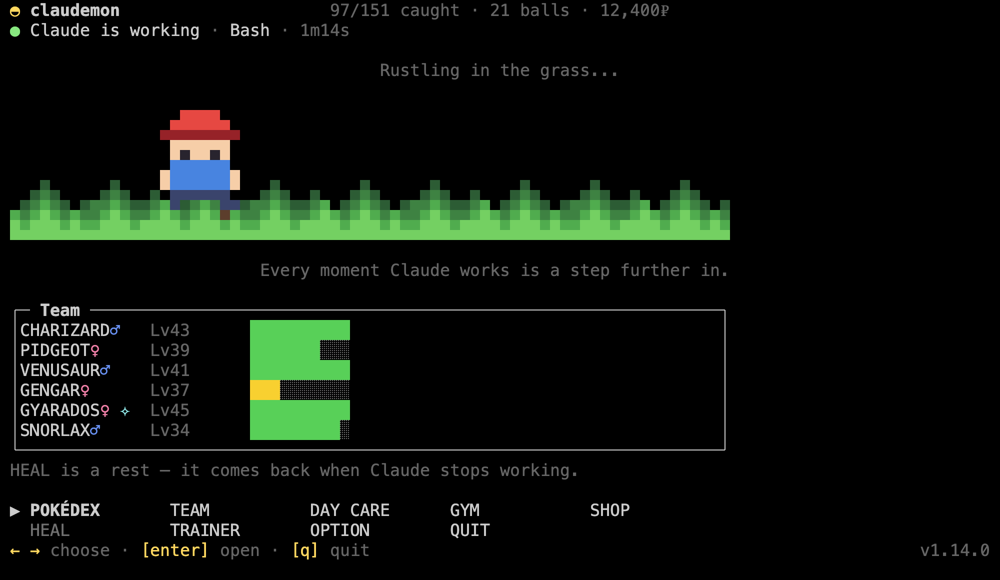
Home — waiting, which is most of it. The walk only moves while Claude does, so you can tell from across the desk without reading anything.
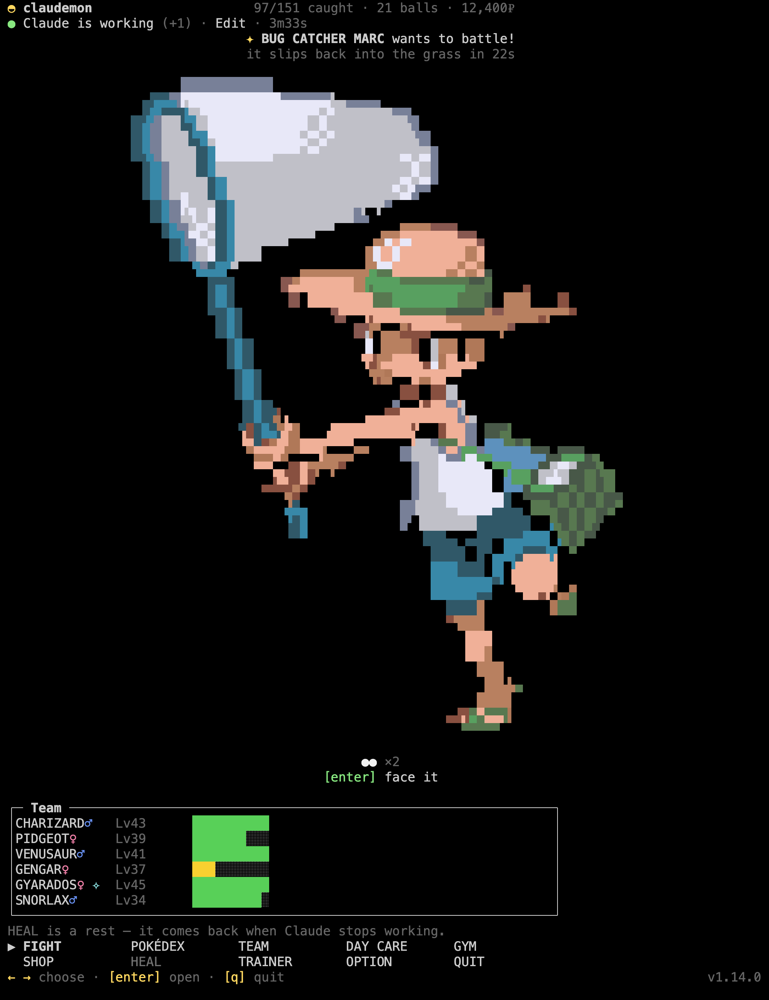
Trainers — sometimes what steps out of the grass is a person. The balls under the sprite are how many Pokemon they are carrying, and the timer runs the same as a wild one: leave them there and they walk off. A tall tab is what buys a sprite this size: the canvas costs half as many rows as columns, so height is what binds.
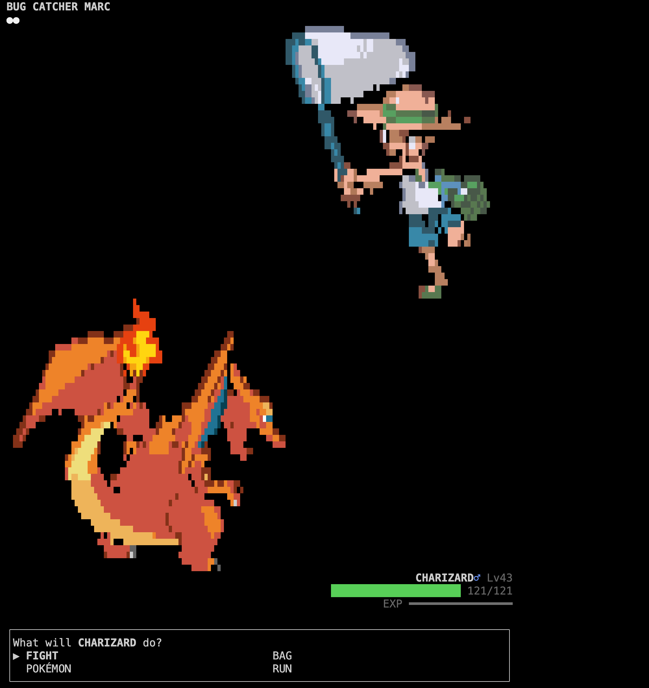
Trainer battle — they send out their team one after another, no running and no throwing balls at somebody else's Pokemon. Beating them pays out, and their Pokemon are worth more experience than a wild one.
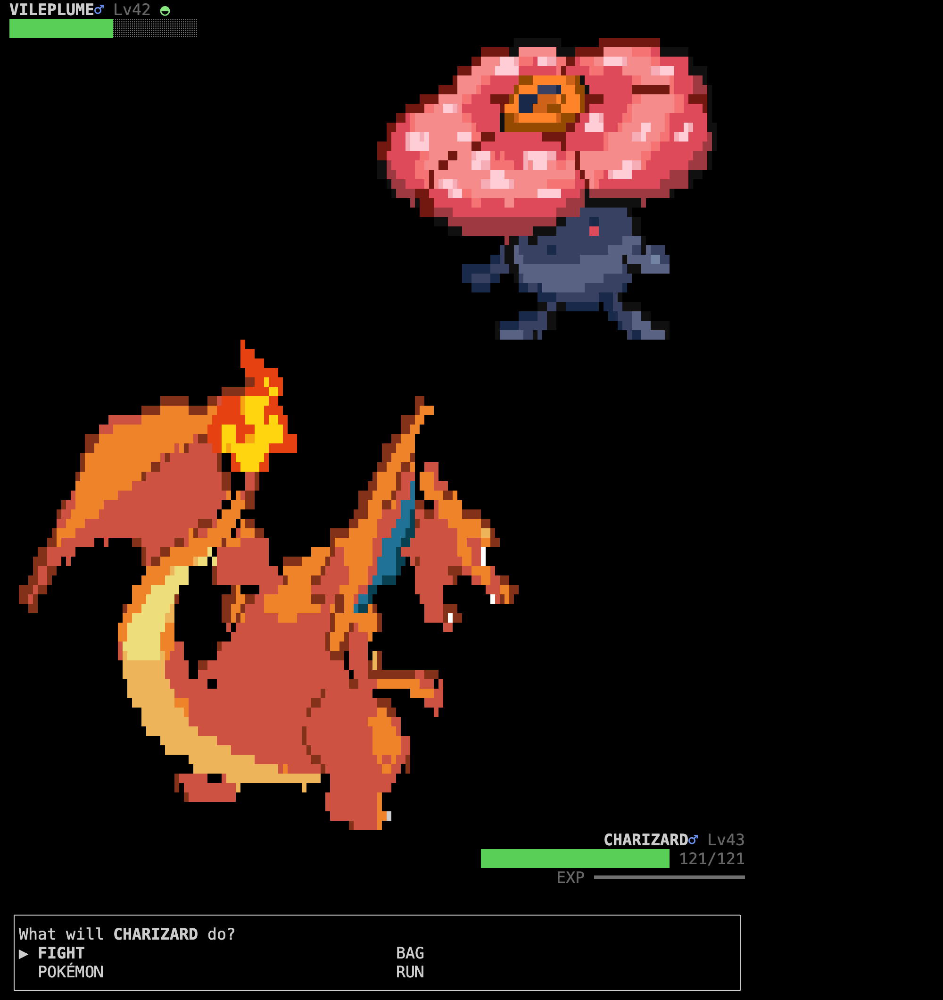
Battle — critical hits, the type chart, status conditions, PP. A ◓ by the foe's name means it is already in your Pokédex.
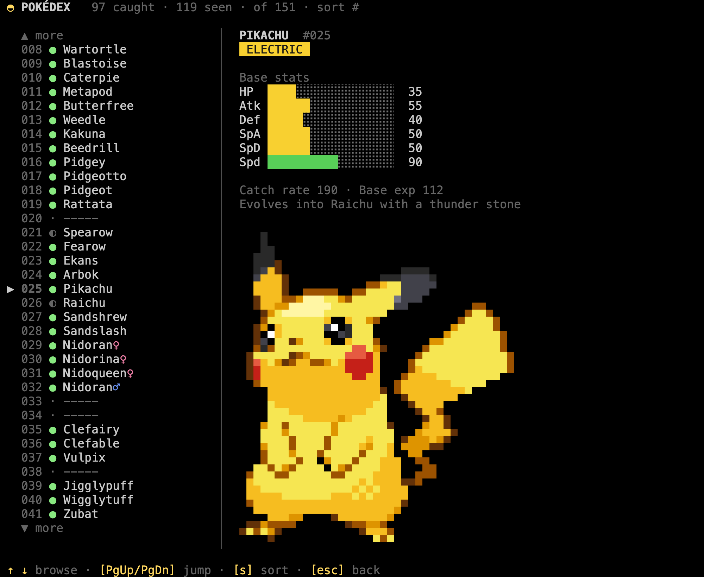
Pokédex — seen and caught are tracked apart, and the stats fill in for the ones you caught.
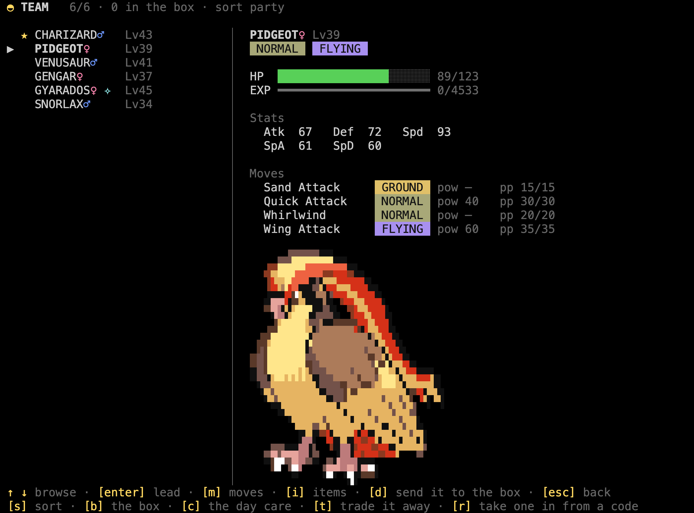
Team — details, moves, experience, enter to change your lead, and the box behind it.
The gyms
For when you would rather go looking for a fight than wait for one. Eight of them, one per type and easiest first: two trainers and then the leader, back to back, with no shop, no rest and nothing wild interrupting.
Nothing is written to disk while you are in there. Beat the leader and the badge is yours. Lose, give up or close the terminal and the whole run is undone — the experience, the money, the potions and the bruises, as if you had never gone in.
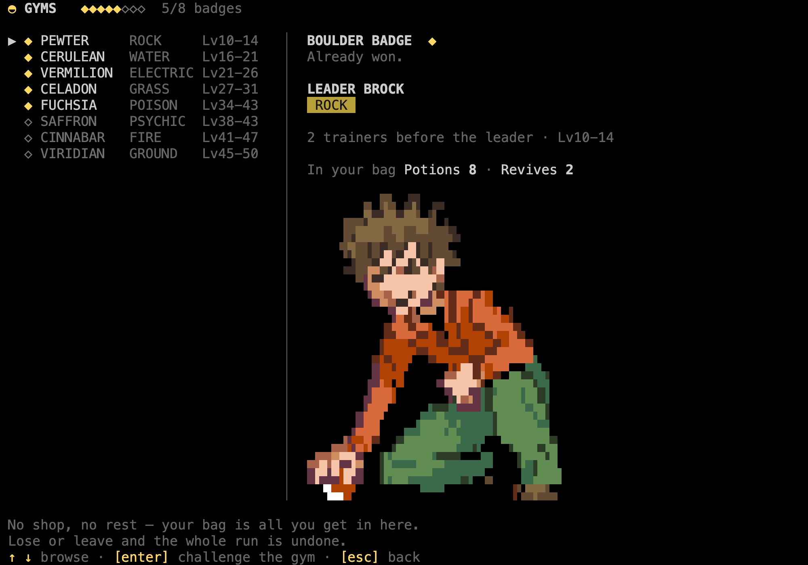
The eight — easiest first, with the type they run, the levels their trainers bring and the badge marked won or not. enter walks in.
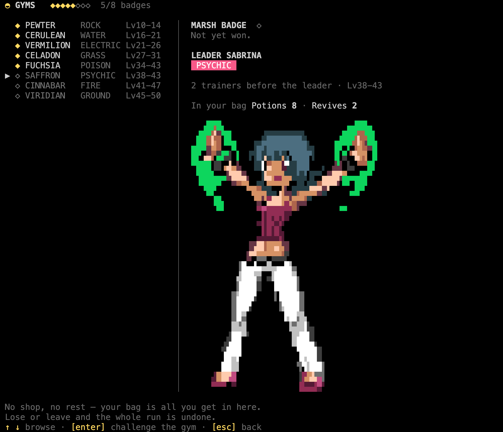
Before you walk in — who is waiting, and what you are carrying. The potions in your bag are the potions you get: there is no shop and no healing past that door.
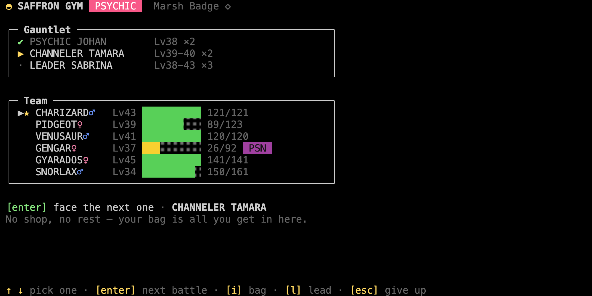
The run — the gauntlet on the way down, your team underneath it and nothing else: i for the bag, l to change your lead, and esc twice to walk out on all of it.
Install
Typed inside Claude Code. Nothing to clone.
What you need first
Claude Code — you are already in it.
Node.js 20.19 or newer — node --version. The game and the hooks run on it, and Claude Code ships as its own binary so it does not bring one. Nothing else to install: no dependencies, no build step.
A terminal with truecolor — iTerm2, Ghostty, WezTerm, Kitty, Alacritty and VS Code's terminal are all fine.
Not macOS Terminal. The sprites come out striped and stretched there, and no setting fixes it. Use any of the others.
Five steps
Add the marketplace and install the plugin — that puts the hooks that make Pokemon appear in place.
Restart Claude Code. It only picks up a plugin's commands and hooks at startup, so until you restart, the next line does not exist yet.
Run the setup. It installs the claudemon command, the status line and the sprites, printing a line per step and saying so if one of them did not work.
/claudemon-setup
Restart Claude Code once more, so the new status line loads.
In a second terminal tab, run claudemon. It asks for a name and a starter the first time, and after that it sits there waiting.
claudemon
BULBASAUR
CHARMANDER
SQUIRTLE
Then send a longish prompt in the Claude tab and watch the status line.
From a clone instead
For hacking on it, a clone works the same way and takes precedence over the installed copy.
git clone https://github.com/zamarrowski/claudemon
cd claudemon
node tools/install.mjs
The 151 Pokemon ship with the plugin, so the only thing the install downloads is the sprites, which takes a few seconds. Updating and uninstalling are in the README.
The trainer card
Your six, drawn at the size they deserve, over your name, the days you have been at it, the badges in the colour of the type that gave them, the achievements you have earned, and the hours Claude has spent working while you played.
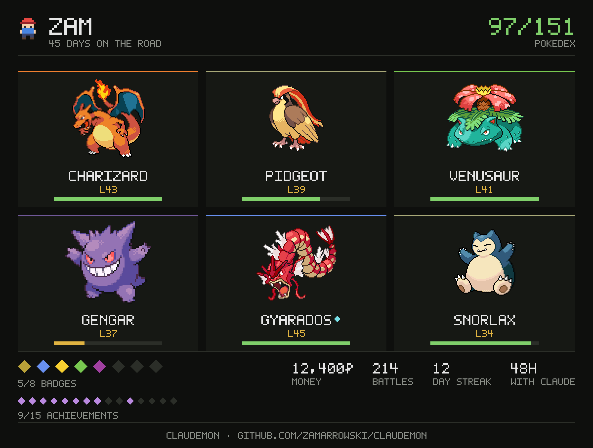
s, on the TRAINER screen — it writes the card, opens it, and leaves you where you were. A shiny is drawn shiny and marked, so the one you spent four thousand encounters on is the one people see. The line along the bottom means the picture carries its own way back here.
Or from a terminal, if you would rather not open the game. --out somewhere.png writes it elsewhere, --no-open leaves the window shut.
claudemon card
Either way it lands in ~/.claudemon/card.png and opens in whatever shows PNGs on your desktop. The game writes the file itself — the same pixel font and palette you see in the terminal, encoded with nothing but node:zlib. No browser, no canvas library, no dependency.
The day care
DAY CARE on the home menu, or c on the team screen. Two slots, filled from your team or your box, and two things happen to whoever waits in them — both only while Claude is working and the tab is open.
They keep growing. A Pokémon left there gains EXP for every step the game counts, levels up where it stands and restats as it does. It picks up the moves that come with the levels it reaches, and with all four slots taken there is nobody in there to ask which one to drop — so the one it has known longest goes, the way the day care has always done it. It still does not evolve in there; you take it out for that.
A pair leaves an egg. Two that can breed leave one behind — drawn on the screen, with how far along it is beside it — and the screen tells you whether they get on before you wait for it. The rules are the ones the games use, and Ditto is the centre of them: Ditto plus anything that can breed at all — genderless, always-male, always-female — with the egg taking the other parent’s base form, which is what makes one Ditto a tool rather than a curiosity. Two of one evolution line, opposite genders, with the egg taking the mother’s base form, so a Nidorina and a Nidorino leave a Nidoran♀ even though the two Nidoran lines are separate Pokédex entries. And Ditto with Ditto, two of a gender, two unrelated lines and anything legendary leave nothing — not even with a Ditto.
It only comes along while you are there. The egg has steps of its own — one for every six seconds Claude works with this tab open, counted by the game rather than by the hooks. So there is no offline progress, nothing hatches in a closed tab, and an egg you left at 420 steps is at 420 steps when you come back. Six hundred of them, which is about an hour of Claude actually working.
Which is what makes it a shiny hunt. An egg rolls its own shiny check at 1 in 512 rather than the 1 in 4096 the grass uses, so a hatch is the one shiny roll in the game you can work towards instead of wait for. It gets the line, the colours and the sound a shiny in the grass gets, and the Pokédex remembers it the same way.
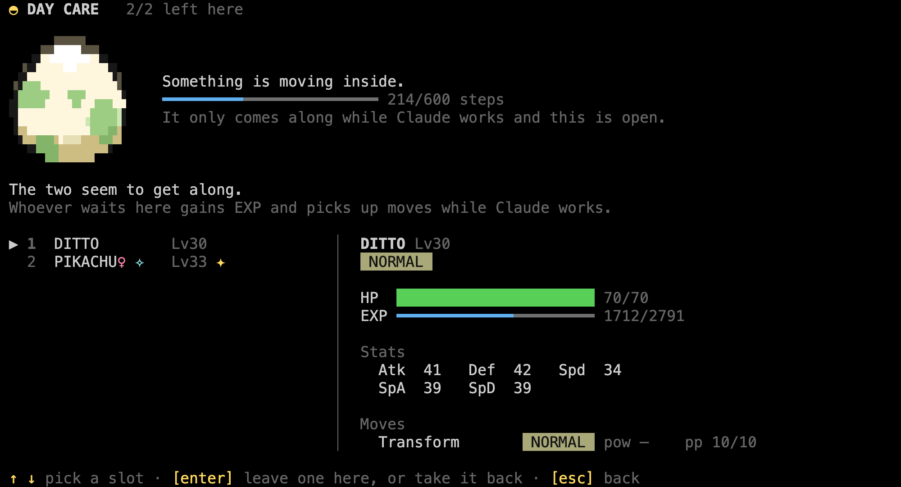
An egg on the way — Ditto in one slot and whatever you are hunting in the other. The bar is the only thing that tells you how far along it is, and it only moves while Claude does.
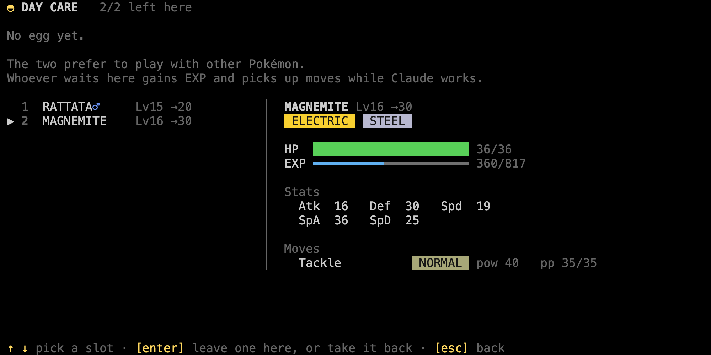
Or just raising them — a pair that leaves no egg still gains EXP for every step. The screen says so before you spend an hour waiting for something that is not coming.
One egg at a time, and taking a parent back does not take the egg with it.
Trading, by code
The only social thing in here, and it needs no server at all. t, on any Pokémon of yours — in the team screen or in the box — tells you what it is about to cost you, and then writes a code.
It lands on your clipboard and in ~/.claudemon/trade.txt, and getting it to whoever is taking the Pokémon is your business rather than the game's. On the other side, r — on either of those two screens — takes a pasted code, and the Pokémon turns up with its nickname, its level, its IVs, its bruises and the PP it had when it left.
A trade only goes one way, and the game holds you to it: the Pokémon leaves your game the moment the code is made rather than when somebody uses it, and there is no undo — which is why the screen asks first. Every code carries who made it, so your own is refused in your own game, and a code that has been taken in once brings nothing the second time it is pasted. Your last Pokémon stays where it is; somebody has to fight.
The code is the Pokémon — deflated and written out in base64, about three hundred characters of it. Nothing opens a socket, and nothing about it leaves your machine unless you are the one who sends it.
What's in it
The original 151, with real base stats, types, catch rates and Red/Blue movesets.
Battles with critical hits, the type chart, status conditions, PP, one-hit KOs, fleeing and switching Pokemon mid-fight.
Catching, where weakening and status genuinely help.
Trainers from nine classes, with a team sized to how far along you are — up to six for an Ace Trainer. They send out one Pokemon after another, you cannot run and you cannot throw a ball at somebody else's Pokemon, and what you get for winning is prize money and half again the experience.
Eight gyms, one per type and ordered by difficulty, each a run of two trainers and then the leader with no way back to the menu in between — and no wild Pokemon interrupting it either. Win and the badge is yours; lose or walk out and the whole run is undone.
Levelling, learning moves, and evolution by level or by stone.
A day care that raises what you leave in it and breeds what can be bred, with Ditto as the universal partner it is in the games. The egg only comes along while Claude works and the tab is open, and it rolls shiny eight times more often than the grass does — the one shiny in the game you can go after rather than wait for.
A Pokédex tracking seen and caught separately and counting how many of each you have faced, a team screen with the box behind it and the bag inside it, and a shop. Items are used on whoever you have picked, which is the only way a stone gets used at all.
A trainer screen holding everything the game has been counting quietly — battles won, lost and run from, the streak of days you have opened it, the hours Claude has worked beside you — and fifteen achievements, from your first catch to the whole Pokédex, each keeping the date you earned it. Once earned they stay earned, so the thirty-day streak is still yours the day you break it.
A line telling you whether Claude is working, which tool it is on and for how long — and a bell when it finishes or gets stuck on a permission prompt, so the game tab is somewhere you can actually sit and wait.
A patch of grass with someone walking through it, who only walks while Claude is working. Something you can catch out of the corner of your eye.
HEAL greyed out for as long as Claude has the keyboard, and a blackout that leaves your team down rather than picking it up. Healing is a rest, and a rest is the half of the session Claude is not using — so a team back at full health is something you pick up in the gaps, not something you farm between two tool calls.
Blips as you move through the menus, and a theme that plays from the first frame of a battle to the last — off in one place if you would rather work in silence.
Controls
Arrow keys move, enter confirms, esc goes back, q quits. Any key advances a battle message. That is the whole scheme — it is the same everywhere.